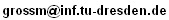

One of the major long-term goals of artificial intelligence is to endow computers with commonsense reasoning capabilities. Although we know how to design and build systems that excel at certain bounded or mechanical tasks which humans find difficult, such as playing chess, we have little idea how to construct computer systems that do well at commonsense tasks which are easy for humans.
Formalizing commonsense reasoning using logic-based approaches will be the focus of the symposium. Topics of interest include, but are not limited to:
The symposium aims to bring together researchers who have studied the formalization of commonsense reasoning. The focus of the symposium is on representation rather than on algorithms, and on formal rather than informal methods. Papers should be rigorous and concrete. Technical papers offering new results in the area are especially welcome; object level theories are preferred. We especially encourage papers on either of the two themes of this symposium, Self-awareness and the Surprise Birthday Present Problem (see below). Survey papers, papers studying the relationship between different approaches, and papers on methodological issues such as theory evaluation, are also encouraged.
There will be two special themes at this year's CommonSense 2005. In addition to the topics listed above, we encourage papers on these two themes, and plan to organize one or more panels on these topics.
The first theme is Self-awareness: the notion of the computer having a sense of self, being conscious of its own reasoning power, and being able to explore itself in relation to other agents. We are especially interested in formal theories that represent self-awareness, and/or allow a system to reason about its own awareness.
The second theme is the Surprise Birthday Present Problem, one of the challenge problems on the Common Sense Problem Page. We encourage submission of papers that present solutions to this problem and to its listed variants. Sample solutions to other challenge problems can be found on the Common Sense Problem Page.
Persons wishing to make presentations at the workshop should submit papers of up to 6000 words, excluding the bibliography. Electronic submissions in pdf, are preferred; otherwise 6 hard copies of the paper are acceptable. Paper submission should be sent to Michael Thielscher. Electronic submissions should be sent to

The proceedings of the symposium will be published as a Dresden University Technical Report (ISSN 1430-211X). Moreover, the program chairs will invite selected authors to submit extended versions of their papers for a special issue of the Journal of Logic and Computation.
Papers may be submitted to Commonsense-2005 even if they have been submitted to other conferences or symposia (such as IJCAI-2005). If a paper is accepted at an archival conference such as IJCAI and is also selected by Commonsense-2005 for publication at the special journal issue, then this paper must be substantially revised and/or extended. Previously published papers are not acceptable for Commonsense-2005.
Persons wishing to attend the symposium should submit a 1-2 page research summary including a list of relevant publications. This is not required for the authors of submitted papers. Moreover PhD students need only to send the tentative title and abstract of their dissertation. All requests for attendance should be sent to Michael Thielscher.